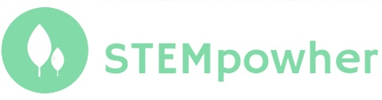

<head>

<style>


body {
  margin: 0;
  font-family: Helvetica, sans-serif;
}

a {
  color: #000;
}

/* header */

.headerNav{
  box-shadow: 0 2px 2px -2px rgba(0,0,0,.2);
  position: fixed;
  width: 100%;
  z-index: 3;
  background-color: white;
  padding-right: 40px;
  
}

.headerNav ul {
  list-style: none;
  overflow: hidden;
  text-align: center;
  letter-spacing: 1.2px;
  font-size: 13px;
}

.headerNav li a {
  display: block;
  padding: 20px 20px;
  text-decoration: none;
}

.headerNav li a:hover,
.headerNav .menu-btn:hover {
  color:grey;
}


/* menu */

.headerNav .menu {
  clear: both;
  max-height: 0;
  transition: max-height .2s ease-out;
  margin-top: 20px;
  background-color: white;

 
}

/* menu icon */

.headerNav .menu-icon {
  cursor: pointer;
  display: inline-block;
  float: right;
  padding:20px;
  position: relative;
  user-select: none;
  margin-top:40px;

}

.headerNav .menu-icon .navicon {
  background: #333;
  display: block;
  height: 2.5px;
  position: relative;
  transition: background .2s ease-out;
  width: 40px;
}


.headerNav .menu-icon .navicon:before,
.headerNav .menu-icon .navicon:after {
  background: #333;
  content: '';
  display: block;
  height: 100%;
  position: absolute;
  transition: all .2s ease-out;
  width: 100%;


}

.headerNav .menu-icon .navicon:before {
  top: 12px;
}

.headerNav .menu-icon .navicon:after {
  top: -12px;
}

/* menu btn */

.headerNav .menu-btn {
  display: none;
}

.headerNav .menu-btn:checked ~ .menu {
  max-height: 240px;
}

.headerNav .menu-btn:checked ~ .menu-icon .navicon {
  background: transparent;
}

.headerNav .menu-btn:checked ~ .menu-icon .navicon:before {
  transform: rotate(-45deg);
}

.headerNav .menu-btn:checked ~ .menu-icon .navicon:after {
  transform: rotate(45deg);
}

.headerNav .menu-btn:checked ~ .menu-icon:not(.steps) .navicon:before,
.headerNav .menu-btn:checked ~ .menu-icon:not(.steps) .navicon:after {
  top: 0;
}

/* 48em = 768px */
@media (min-width: 988px) {

  .headerNav li {
    float: left;
  }
  .headerNav li a {
    padding: 20px 30px;
  }
  .headerNav .menu {
    clear: none;
    float: right;
    max-height: none;
  }
  .headerNav .menu-icon {
    display: none;
  }
}


	#about .about, #stories .stories, #research .research, #opportunities .opportunities {
            color: grey;  


        }

</style>

<header class="headerNav">

<a href="index.html"></a>
  <input class="menu-btn" type="checkbox" id="menu-btn" />
  <label class="menu-icon" for="menu-btn"><span class="navicon"></span></label>
  <ul class="menu">
    <li><a class="about" href="About.html">ABOUT</a></li>
    <li><a class="research" href="Research.html">RESEARCH</a></li>
    <li><a class="stories" href="Stories.html">STORIES</a></li>
    <li><a class="opportunities" href="Opportunities.html">OPPORTUNITIES</a></li>
  </ul>
</header>
